تعلّم ديناميكيات تدفق المرور باستخدام الحقول العشوائية
الملخص
تقدّم هذه الورقة نموذج تدفق مروري متوسط المقياس يصف صراحة التطور المكاني-الزماني لتوزيعات الاحتمال لمسارات المركبات. وتُمثَّل الديناميكيات بسلسلة من مخططات العوامل، مما يتيح تعلم ديناميكيات المرور من قياسات لاغرانجية محدودة باستخدام تقنية فعالة لتمرير الرسائل. ويضمن النهج أن تكون السرعات المقدرة وكثافات المرور غير سالبة باحتمال يساوي واحدا. تُختبر تقنية التقدير باستخدام مجموعات بيانات لمسارات مركبات مولَّدة بواسطة محاكي مرور مجهري مستقل، ويُبيَّن أنها تعيد إنتاج ظروف المرور بكفاءة عند مستويات اختراق لمركبات الاستشعار لا تتجاوز 10%. وتُقارَن الخوارزمية المقترحة كذلك بأحدث تقنيات تقدير حالة المرور المطورة للغرض نفسه، ويُظهر ذلك أن النهج المقترح يمكن أن يتفوق على هذه التقنيات من حيث دقة إعادة البناء.
Index Terms:
الأتمتات الخلوية، الحقول العشوائية الشرطية، حقول ماركوف العشوائية، مخطط العوامل، النمذجة العشوائية للمرور، تقدير حالة المرور.I المقدمة
مع بدء تقنيات المركبات الآلية (AV) في الانتشار ضمن أساطيل المركبات في مدن العالم، فمن المعقول توقع أن تصبح بيانات مسارات المركبات مصدرا بارزا لبيانات مرور عالية الدقة. ويمكن أن تعمل المركبات الآلية كمجسات داخل تيار المرور، إذ تبث مواقعها وسرعاتها باستمرار في الزمن الحقيقي. والأهم من ذلك أن المركبات الآلية تستطيع أيضا توفير مسافات التتابع بين المركبات (أي المسافة بين المركبات المتعاقبة) باستخدام تقنية الأشعة تحت الحمراء أو التقنية الراديوية [yuan2012real, seo2015probe]. غير أن قضايا الخصوصية وقيود التقنية قد تحد من قدرة هيئات إدارة المرور على جمع هذه المعلومات وتحليلها ونشرها. ولتجاوز ذلك، يمكن دمج هذه البيانات مع البيانات المستقاة من أجهزة الرصد التقليدية مثل كواشف الحلقات الحثية (المجسات الثابتة). وبما أن هذين المصدرين من البيانات يكمل أحدهما الآخر، يمكن الحصول على مجموعات بيانات شاملة لرصد المرور وتقدير حالته [hofleitner2012learning]. ومع ذلك فإن التحسن في الدقة الناتج عن دمج البيانات، مقارنة بتطبيقات المجس الواحد، يعتمد على معدلات اختراق مركبات الاستشعار وعلى ظروف المرور. وفي شبكات الطرق الحضرية، حيث تكون أجهزة المجسات الثابتة محدودة عادة وتؤدي الإشارات الضوئية دورا حاكما في ديناميكيات المرور، قد يلزم عدد أكبر من مركبات الاستشعار لتوصيف ظروف المرور بدقة.
اقتُرح في السنوات الأخيرة عدد من تقنيات النمذجة لتقدير كثافات المرور [herrera2010incorporation, jabari2012stochastic, jabari2013stochastic, deng2013traffic]، والسرعات [work2008ensemble]، وأزمنة الرحلات [hellinga2008decomposing, chen2012prediction]. كما أُجريت دراسات لاستخلاص الأنماط من البيانات المتدفقة باستخدام تقنيات تنقيب البيانات [hunter2012large, jenelius2017urban, dilip2017sparse, jabariGenGammaKernels]. ولمراعاة التباين في المرور الحضري، اقتُرح في [herring2010estimating] نهج إحصائي يستخدم نماذج ماركوف الخفية المقترنة لتقدير حالة المرور من بيانات مجسات متناثرة. وقد تجاوزت الدراسة [hofleitner2012arterial] حدود النهوج الإحصائية البحتة، حيث اقتُرح إطار نمذجة هجين يجمع التعلم الآلي مع نظرية المرور الهيدروديناميكية للتنبؤ بأزمنة الرحلات على الطرق الشريانية من بيانات مجسات GPS المتدفقة. ومن ناحية أخرى، اقتُرح في [papathanasopoulou2015towards] نموذج قائم على البيانات يلتقط التفاعلات الطولية بين المركبات.
ركزت البحوث المتعلقة بتقدير حالة المرور (TSE) من بيانات المجسات في الشبكات الحضرية في معظمها على إعادة بناء ظروف المرور عند مستوى تجميعي (على امتداد مقطع طريق كامل بين تقاطعين) [furtlehner2007belief, bekiaris2016highway, fountoulakis2017highway]. وعلى مقياس أدق، أُعيد بناء كثافات المرور على مقطع طريق سريع بتعديل النماذج المتصلة التقليدية باستخدام حد تصحيحي يدفع تقدير النموذج نحو قياسات مجسات GPS في [herrera2010incorporation]. ولم تتطلب التقنيات المقترحة معرفة بيانات مجسات مداخل ومخارج الطريق لتقدير الكثافة، كما حُللت معدلات الاختراق الدنيا المطلوبة على الطرق الشريانية. ويناقش [vandenberghe2012feasibility] أكبر فاصل زمني لأخذ العينات (أي الزمن بين عينتين متتاليتين لمركبة مجسّة) مطلوبا لاكتشاف الحوادث بدقة، وتدرس [jabari2016Sensor] الموضع الأمثل للمجسات لضمان زمن موثوق لاكتشاف الحوادث. وأُجريت في [mazare2012trade] مقارنات بين تقديرات زمن الرحلة المنتجة باستخدام مصدر واحد للبيانات وتلك المنتجة بدمج مصدرين للبيانات (المجسات الثابتة وبيانات مركبات الاستشعار). وفي [kerner2013traffic]، طُوّر نموذج عشوائي باستخدام نظرية المرور ثلاثية الأطوار لإعادة بناء ديناميكيات المرور المكانية-الزمانية باستخدام بيانات مركبات الاستشعار وكواشف ثابتة تقع على فواصل تقارب 1 كم. وقد أفاد عدد من الدراسات بمعدلات اختراق مركبات الاستشعار المطلوبة لتقدير حالة المرور على الطرق الشريانية [hiribarren2014real, ban2009delay, ban2011real, zheng2018traffic, dilip2018vehicle]. ورغم أن موثوقية بيانات مركبات الاستشعار قد دُرست وقورنت ببيانات المجسات الثابتة [kim2014comparing, bar2007evaluation]، فإن أثر التباين في التغطية المكانية-الزمانية لمركبات الاستشعار على نمط المرور المعاد بناؤه، كما عولج في [kerner2013traffic]، يحتاج إلى مزيد من الاستكشاف.
تطوّر هذه الورقة أولا نموذج تدفق مروري احتماليا قادرا على إعادة إنتاج موجات الصدمة والظهور التلقائي لموجات التوقف والانطلاق في المرور، بما يتسق مع المشاهدات التجريبية [sugiyama2008traffic]. ومن السمات الفريدة لنموذج المرور، مقارنة بجميع نماذج تدفق المرور القائمة التي طُورت لتقدير حالة المرور، أنه ينمذج صراحة تطور توزيع الاحتمال لسرعات المركبات ومواضعها (في سياق فضاء متقطع). وهذا يتيح لنا ضمان عدم حدوث حالات مرورية سالبة (مثل السرعات وكثافات المرور) في نموذجنا مطلقا (باحتمال 1). والأهم أن هذه السمة تنتقل إلى طريقة تقدير حالة المرور المقترحة. وبحسب علمنا، لم يُعالَج هذا الأمر بعد في الأدبيات. وفي سياق TSE، نبيّن أولا أن نموذج المرور يمتلك بنية حقل ماركوف عشوائي (MRF). ثم نستخدم تقنيات تمرير الرسائل للاستدلال الاحتمالي على حالات المرور في ظل قياسات محدودة. وتتمثل الفكرة الرئيسة في تفكيك MRF إلى سلسلة من مخططات العوامل، مخطط واحد لكل خطوة زمنية. وتمتلك المخططات الناتجة بنية شجرية، مما يسمح باستدلال دقيق بتمريرة أمامية واحدة وتمريرة خلفية واحدة؛ أي إن مخطط تمرير الرسائل فعال حسابيا. كما يتيح ذلك تنفيذات عودية وفورية لخوارزميتنا.
تُنظَّم بقية الورقة على النحو الآتي: يُشتق النموذج الاحتمالي لديناميكيات المرور متوسطة المقياس وتُوصَف مسألة الاستدلال بعد ذلك. يلي ذلك تمثيل الديناميكيات بوصفها حقلا عشوائيا لماركوف، ثم عرض نهج مخطط العوامل المقترح لحل مسألة الاستدلال. وتلي ذلك تجارب اختبار النموذج والتحقق منه، وتختتم الورقة بملخص موجز ومناقشة لاتجاهات البحث المستقبلية.
II ديناميكيات المرور العشوائية
II-A نموذج التدفق متوسط المقياس
يُستخدم نموذج عشوائي متقطع (في الحالة والزمن) متوسط المقياس لتمثيل ديناميكيات المرور. وتُحكم حركة المركبات في النموذج بدوال كمون تصف «ملف الطاقة» الخاص بظروف المرور المحلية. وقد استُخدمت نماذج مشابهة لدراسة ظواهر مرورية مهمة مثل المرور المتزامن عند المنحدرات وأنظمة التوقف والانطلاق [sopasakis2006stochastic]. وهذا يجعلها أغنى من النماذج العيانية التي تلتقط انتشار الموجات، لكنها ليست بثراء النماذج المجهرية التي تلتقط حركة المركبات الفردية في فضاء وزمن متصلين.
تُمثَّل الطريق الفيزيائية على أنها شبكة منتظمة أحادية البعد تتكون من خلية. وتُقطَّع الإحداثيات المكانية لكل مركبة على الطريق بحيث يمكن أن تشغل كل خلية مركبة واحدة على الأكثر، ويتحقق ذلك بتعيين طول الخلية إلى قيمة مناسبة، مثل 7.5 م [larraga2005cellular]. وتُحدَّد حالة كل خلية مشغولة عند زمن متقطع تحديدا كاملا بسرعة متقطعة يرمز إليها بـ ، حيث إن هو العدد الأقصى من الخلايا التي يمكن أن تقطعها مركبة في خطوة زمنية واحدة. ومن الواضح أن يعتمد على طول الخطوة الزمنية المتقطعة. لذلك يمكن تعريف معامل حالة لكل خلية عند الزمن لتمثيل حالة المرور في الخلية، حيث يمثل -1 خلية حرة (أو فارغة). وسنستخدم أيضا الترميز المتجهي و، حيث يلزم أن يكون (أي توجد مركبة واحدة على الأكثر في كل خلية).
لنرمز بـ إلى مجموعة المركبات على مقطع الطريق، ولتكن زوج مركبات تابع-قائد. وليرمز إلى موضع المركبة في الخطوة الزمنية ، و إلى التباعد بين المركبتين. ولأجل ، نعرّف كمون التفاعل
| (1) |
حيث
| (2) |
هي علاقة بين السرعة والتباعد، و متجه مواضع المركبات عند الزمن . ويرمز إلى مؤثر الإسقاط بـ . أما معاملات النموذج فهي و و و، حيث تلتقط و و مجتمعة زمن استجابة السائق والتسارع الأقصى. ويعتمد كمون التفاعل لأجل على شروط الحدود. فعلى سبيل المثال، في حالة حد حر، يكون لدينا
| (3) |
في شروط الحدود الدورية (مثل الطريق الحلقية)، يكون لدينا لأجل أن . لاحظ التناظر . يُحدَّث موضع المركبة عند الخطوة الزمنية اعتمادا على سرعتها كما يلي:
| (4) |
يضمن الحد الأدنى أعلاه ألا تشغل المركبات وقادتها الموضع نفسه [wagner1997realistic, li2006realistic]. وبناء على ذلك، تجري عملية تحديث الحالة بترتيب تصاعدي لـ (من المركبة الأكثر منبعيا من حيث الموضع إلى المركبة الأكثر مصبيا). وهذا مشابه لقاعدة الانتشار الضمنية في [emmerich1997improved]، التي تراعي توقع السائق لحركة المركبة القائدة. ويُنفذ تحديث حالة المرور في خطوات زمنية متقطعة لتحديد . كما يمكن تفسير تحديث الموضع (4) على أنه كمون ديناميكي
| (5) |
لكل . وينتج عن ذلك قاعدة تحديث موضع حتمية، مشروطة بالماضي. ويُعطى كمون ديناميكي بديل، لأي ، بالصيغة
| (6) |
المعامل في (6) هو معامل دقة؛ فكلما أصبح كبيرا جدا اقترب (6) من (5)، في حين يقابل الصغير تباينا أعلى.
بما أن المواضع في الخطوة الزمنية تعتمد على الحالات (المواضع والسرعات معا) في الخطوة الزمنية ، وبما أن السرعات تعتمد على المواضع في الخطوة الزمنية ، يمكننا تعريف زوج متجهات حالة واشتراط كل من و على . وتكون «طاقة الكمون» الكلية للمركبات الـ في النظام عند الزمن هي
| (7) |
إن احتمال أن تتخذ المركبات الـ السرعات في الخطوة الزمنية التالية ، معطاة حالة النظام عند الزمن ، يرتبط بالطاقة الكلية كما يلي
| (8) |
لأجل و، ولكل . ولأي أو ، يكون . ومن ثم، وبحكم البناء، يكون احتمال أي حالة مرورية غير معقولة (مثل سرعة سالبة أو أكبر من ) صفرا. ولا تستطيع الممارسة القياسية المتمثلة في إضافة ضوضاء إلى ديناميكيات حتمية أن تستبعد مثل هذه الحالات المرورية غير المعقولة [jabari2012stochastic].
تُلخَّص الخطوات اللازمة لمحاكاة ديناميكيات المرور في الخوارزمية 1، التي تفترض دون فقدان للعمومية: (i) حدا مصبيا حرا، و(ii) تستخدم الكمون الديناميكي الحتمي (5)، المكافئ لقاعدة التحديث (4)، و(iii) تستفيد من بنية الاستقلال الناتجة عن طريقة حساب الطاقة الكلية في (7). ولاحظ أيضا استخدام متغيرات بحروف صغيرة (مثل بدلا من )؛ وذلك للتأكيد على أنها تحققات محاكاة وليست كميات عشوائية. ويمكن تعديل الخوارزمية بسهولة لاستيعاب قيود مصبية بطريقة مشابهة لتحديث الحالة المنبعية (انظر [jabari2016node] للتفاصيل المتعلقة بمعالجات الحدود)، أو لاستيعاب حد دوري واستخدام الكمون الديناميكي (6). وأخيرا، تُدخَل عشوائية في الكبح من خلال احتمال الإبطاء كما في [schadschneider2002traffic, tian2009synchronized].
II-B الاستدلال الاحتمالي
لنفترض وجود مركبة في النظام، وأنه عند كل خطوة زمنية تُرصد حالة (سرعة وموضع) مجموعة جزئية من هذه المركبات. وتهتم مسألة التقدير بتحديد حالة جميع المركبات معطاة الرصدات الجزئية. وبدقة أكبر، تسعى مسألة التقدير إلى ملاءمة توزيع الاحتمال الشرطي للحالة معطاة الرصدات. ولنفترض أن التوزيع القبلي للسرعات (الحالة عند الزمن 0)، أي ، معطى. وليرمز إلى حالات المرور المرصودة (القياسات) المتاحة عند الزمن . وفي كل خطوة زمنية، تسعى مسألة الاستدلال إلى تحديد الاحتمال الشرطي
| (9) |
حيث يعتمد على تقديرات الاحتمال البعدي الأعظمي (MAP) لحالة المرور في الخطوة الزمنية . لاحظ أننا نفترض معرفة أحجام المرور، أي عدد المركبات في النظام، في كل خطوة زمنية. وهذا الافتراض شائع في سياق تقنيات TSE القائمة على القياسات اللاغرانجية. ويمكن الحصول على أحجام المرور بصورة منفصلة، مثلا باستخدام النهج المبين في [zheng2017estimating]. ويتحقق استدلال حالة المرور عند الزمن باستخدام تقديرات MAP:
| (10) |
حيث
| (11) |
هي كثافة الاحتمال الهامشية (الشرطية) لحالة المركبة عند الزمن ، معطاة الحالة عند الزمن والرصدات عند الزمن . ويمكن بعد ذلك استخدام هذه التقديرات لحساب مواضع المركبات المقدرة، ، عبر (4)، وإعداد كمدخل للخطوة الزمنية التالية. ونقسّم مسألة الاستدلال إلى سلسلة من مسائل الاستدلال، واحدة لكل خطوة زمنية. وتتمثل الميزة الرئيسة لهذا التقسيم في أن كل مخطط عوامل (لكل خطوة زمنية) يكون شجرة. وهذا يبسط الحسابات بدرجة كبيرة كما هو موضح أدناه.
III تمثيل مخطط العوامل لحقول ماركوف العشوائية
III-A ديناميكيات المرور بوصفها حقول ماركوف عشوائية
يشكل تسلسل سرعات المركبات حقلا عشوائيا ذا قيم متقطعة يتمتع بخاصية ماركوف
| (12) |
لكل ولكل ، حيث إن هي مجموعة جيران ، وتشمل كلا من قائده وتابعه. ويشار إلى الحقل باسم حقل ماركوف عشوائي (MRF). وفي كل خطوة زمنية ، يمكن ترميز افتراضات الاستقلال (الشرطي) هذه بين المتغيرات في مخطط ، حيث تمثل مجموعة المركبات في النظام عند الزمن رؤوس المخطط، وتمثل تفاعلات القائد-التابع بين المركبات في النظام عند الزمن حواف الخاصة بـ . ومن خلال ترميز الاعتمادات المكانية في حقل السرعة عبر الحواف ، فإن الشرط في (12) يعني أن سرعة أي مركبة تكون مستقلة عن حالة المرور معطاة حقل السرعة المحلي. أي إنه إذا كانت سرعات المركبات في معروفة، فلا تلزم معرفة إضافية لتكميم احتمالات سرعة المركبة .
III-B التحليل إلى عوامل وتمثيل مخطط العوامل
يمكن تمثيل التوزيع الاحتمالي المشترك على جميع المتغيرات في نموذج ماركوف بصورة مدمجة بتعريف مجموعة من العصب ، وهي مجموعات جزئية من رؤوس بحيث تكون كل الرؤوس في كل عصبة متصلة اتصالا كاملا أو متجاورة تبادليا. وتسمى العصبة عظمى إذا لم يكن بالإمكان إضافة أي رأس آخر في من دون انتهاك خاصية العصبة. يمكن التعبير عن التوزيع المشترك لـ MRF على العصب العظمى بوصفه حاصل ضرب عوامل كما يلي
| (13) |
حيث إن هو ثابت التطبيع، و مجموعة من العوامل لكل عصبة عظمى في . وكل عامل هو دالة غير سالبة معرفة على عصبة لتمثيل التوزيع الاحتمالي (غير المطبع) بين الرؤوس في العصبة. وعندما تُقيد الكمونات بأن تكون موجبة تماما، يمكن إعادة معلمة العوامل في فضاء اللوغاريتم والتعبير عنها بدلالة توزيع بولتزمان على الصورة ، حيث إن هو تقييد على الرؤوس في العصبة ، و دوال كمون معرفة على نحو ملائم فوق العصب. ومن ثم،
| (14) |
وهذا مماثل لـ (8): كلما انخفضت طاقة تهيئة العصبة (للحالات)، زاد احتمال تلك التهيئة. أما التقنيات التقليدية المستخدمة لتمثيل الاعتماد في ديناميكيات المرور بيانيا فستؤدي إلى ما يعرف بنموذج ماركوف ذي حلقات. ومن المعروف أن هذه النماذج لا تتحلل إلى عوامل بصورة وحيدة. وبدلا من ذلك، يعرّف النهج المقترح مخططا موجها جزئيا، أو حقلا عشوائيا لماركوف، معمّلا على مجموعة من العوامل استنادا إلى ديناميكيات المرور العشوائية المعروضة أعلاه. وبالاشتراط على ، نحصل على .
لننظر في الحالة التي تكون فيها مركبات الاستشعار مجهزة بمجسات قادرة على قياس مسافات وسرعات المركبات الأخرى المتجاورة مباشرة، أي قادتها وتوابعها المباشرين. (ونلاحظ أن أنظمة التحذير من التصادم الأمامي والخلفي، وهي قياسية في معظم مركبات اليوم، تمتلك هذه القدرات.) ويُرمَّز الاعتماد على الماضي في عوامل العقد، ، وتُرمَّز التفاعلات بين المركبات المتجاورة في كمونات الحواف، . (وعندما يظهر فهرسا مركبتين في الرمز السفلي، يُفهم العامل ضمنيا على أنه عامل حافة.) ترتبط عوامل العقد بديناميكيات المرور عبر الكمونات الديناميكية:
| (15) |
وترتبط عوامل الحواف بديناميكيات المرور عبر كمونات التفاعل:
| (16) |
يعرض الشكل 1a تمثيل مخطط عوامل لنظام يضم خمس مركبات مع التفاعلات بين المركبات المتجاورة. وتمثل سرعات المركبات بعقد دائرية في المخطط، بينما تمثل العوامل بعقد مربعة فيه.
III-C تمرير الرسائل وخوارزمية الجمع والضرب
يتيح إطار مخطط العوامل استدلالا دقيقا للهامشيات المحلية على العقد أو مجموعات العقد في المخططات ذات البنية الشجرية (مثل المخطط المبين في الشكل 1) باستخدام خوارزمية الجمع والضرب (المعروفة أيضا باسم انتشار الاعتقاد البايزي). وتحسب خوارزمية الجمع والضرب التوزيعات الهامشية لعناصر الحقل العشوائي بوصفها حاصل ضرب الرسائل الواردة من عقد العوامل المجاورة لها، كما هو مبين في الشكل 1b. ويمكن تفسير رسالة من عامل إلى متغير على أنها المعلومات التي يحتويها العامل عن ذلك المتغير. تسمح البنية الشجرية لمخطط العوامل باستدلال دقيق بتمريرة أمامية واحدة وتمريرة خلفية واحدة، بدءا من أي عقدة بوصفها عقدة جذرية. وتوضح الأسهم الحمراء في الشكل 1b التمريرة الأمامية عندما يكون هو الجذر، وتمثل الأسهم السوداء التمريرة الخلفية. وتُعرض خوارزمية الجمع والضرب كما تطبق في سياقنا في الخوارزمية 2، حيث اعتمدنا الاصطلاح القاضي بأن الجذر هو دائما المركبة الأكثر مصبيا في النظام، .
تنشئ العملية مصفوفة قطرية بعناصر معطاة بالمتجه ، و هو متجه آحاد بحجم . ويمكن العثور على مزيد من التفاصيل حول خوارزمية الجمع والضرب في المراجع القياسية الخاصة بالنماذج البيانية والتعلم الآلي؛ مثل [bishop2006pattern, koller2009probabilistic]. وتسعى الخوارزمية 2 إلى تحديد التوزيعات الهامشية كاملة، بدلا من حساب احتمالات قيم مفردة. وتوضح القائمة الآتية كيفية حساب الرسائل (وقد حذفنا الأس العلوي لتبسيط الترميز):
-
1.
من إلى :
(17) -
2.
من إلى :
(18) -
3.
من إلى :
(19) -
4.
من إلى :
(20) -
5.
من إلى :
(21) -
6.
من إلى :
(22)
عندما تكون القياسات متاحة لبعض المركبات، والمعطاة بـ ، يمكن الاشتراط على هذه القياسات عبر تثبيت المتغيرات المناظرة عند القيم المرصودة. ونتيجة للاستقلال الشرطي، فإن رصد عقدة ما يكسر بنية السلسلة إلى غابة من سلاسل مستقلة. فعلى سبيل المثال، في نظام المركبات السبع في الشكل 1a، وبافتراض أن و معطيان (أي إن سرعتي المركبتين 3 و6 معروفتان/مقاساتان)، نحصل على الغابة المستقلة المبينة في الشكل 2.
لاحظ أنه، بحكم التصميم، فإن القيم الوحيدة التي يمكن أن تتخذها السرعات في تقع في المجموعة ، ولا يمكن للمواضع إلا أن تتخذ قيما في ضمن ، كما أن الديناميكيات خالية من التصادم عبر عملية ‘min’. وتضمن هذه الخصائص أن تكون السرعات غير سالبة (ولا يمكن أن تتجاوز ) باحتمال 1. وبما أن الرسائل ليست إلا حواصل ضرب لهذه الكمونات، فإن هذه الخاصية محفوظة في جميع حالات المرور المقدرة التي تُستحصل بالخوارزمية 2.
تنطوي مسألة الاستدلال أساسا على تنفيذ تمريرة أمامية واحدة وتمريرة خلفية واحدة، ولذلك يكون عدد الحسابات متناسبا طرديا مع . ويحدّ من الأعلى متوسط عدد الحسابات اللازمة لحساب الرسائل والاحتمالات. وينتج عن ذلك (بصورة تقريبية) تعقيد حسابي قدره .
IV اختبار النموذج والتحقق منه
IV-A توضيح ديناميكيات المرور
نوضح أولا خصائص ديناميكيات المرور الناتجة عن الخوارزمية 1. وللقيام بذلك، نحاكي شروطا ابتدائية وحدية مختلفة، ونبحث مسارات المركبات الناشئة والمخطط الأساسي. وننظر في سيناريوهين: (أ) مقطع طريق طويل و(ب) طريق حلقية، لكل منهما طول كلي قدره 700 م. ونفترض معاملات النموذج الآتية: م/ثانية، و، و م، و ثانية. وتُرسم مسارات المركبات المولدة في الشكل 3 والشكل 4. وقد رُمّزت المسارات لونيا بحسب سرعات المركبات، حيث يشير الأخضر إلى حالات الجريان الحر (70-120 كم/ساعة)، والأصفر إلى حالات المرور فوق الحرجة (25-70 كم/ساعة)، والأحمر إلى الحالات شديدة الازدحام (0-25 كم/ساعة).
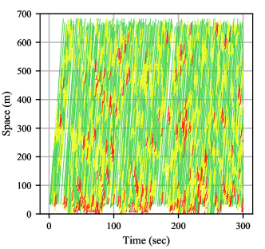
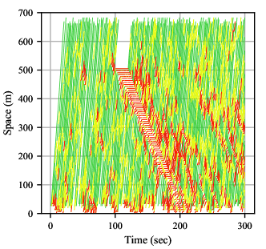
يبين الشكلان 3a و3b مسارات المركبات على امتداد مقطع الطريق الطويل في ظروف المرور العادية ومرور الحادث (مركبة متوقفة)، على التوالي. وفي الشكل 3a، يمكن ملاحظة بداية أنماط موجات صدمة طفيفة وتلاشيها بسبب المرور عالي الكثافة. ويدل ذلك على أن المركبات تكيف سرعتها مع ظروف المرور المحلية. ويمكن أيضا ملاحظة موجة الصدمة المنتشرة إلى الخلف والناجمة عن الحادث المروري في الشكل 3b. وتبلغ سرعة موجة الصدمة المنتشرة إلى الخلف نحو كم/ساعة، وهو مقدار معقول لمرور الطرق السريعة [lu2007freeway]. كما أن صف المرور يتلاشى بمعدل أسرع بكثير من معدل تكونه، مما يدل على تدفق إشباع أعظمي عند تفريغ الصف.
يبين الشكلان 4a و4b مسارات المركبات المستحصلة لطريق حلقية تضم 20 و30 مركبة، على التوالي. وفي كلتا الحالتين، توزع المركبات بانتظام على امتداد الطريق عند الزمن صفر. ومن خلال ملاحظة الأنماط الحمراء في الشكلين عن قرب، يلاحظ تشكل موجات التوقف والانطلاق بما يتسق مع المشاهدات التجريبية [sugiyama2008traffic]. ويلاحظ أيضا أن موجات التوقف والانطلاق تحدث بتواتر أعلى (كما هو متوقع) في الشكل 4b.
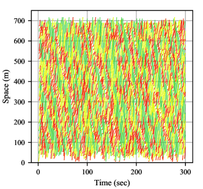
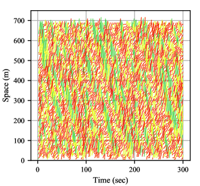
يمثل الشكلان 5a و5b مخططي تشتت لبيانات التدفق-الكثافة والسرعة-الكثافة، على التوالي، مستخرجة من مثال مقطع الطريق الطويل. ونرى كثافة حرجة تقارب 25 مركبة/كم في الشكل 5a، وفارقا واضحا بين المرور الحر والمرور المزدحم (باعتدال). كما نرى تشتتا أقل في الأول وتشتتا أكبر في الثاني، بما يتسق مع مخططات التشتت الحقلية النموذجية المرصودة على الطرق السريعة.
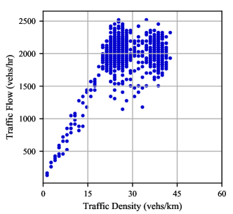
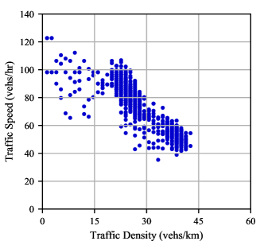
IV-B إعادة البناء باستخدام MRF: مثال محاكاة
في هذا القسم، نجري تجارب محاكاة باستخدام محاكي مرور مجهري تجاري لتوليد ديناميكيات «الحقيقة المرجعية». ثم تُستخدم عينات من مسارات المركبات المحاكاة لإعادة بناء جميع ديناميكيات المركبات باستخدام الخوارزمية 2. ونحاكي مقطع طريق سريع بسرعة جريان حر قدرها 110 كم/ساعة مع منحدر دخول يقع عند الطرف المصبي للطريق. وينشئ التدفق عبر منحدر الدخول موجات توقف وانطلاق على امتداد مقطع الطريق السريع. ويوفر الشكل 6 خريطة سرعة لديناميكيات «الحقيقة المرجعية» المحاكاة.
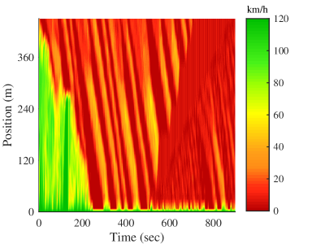
ولاختبار خوارزمية إعادة البناء، نعد شبكة من خلايا طول كل منها 7.5 م مع (المقابل لـ 108 كم/ساعة). ونقارن خريطة السرعة المعاد بناؤها باستخدام الخوارزمية 2 عند مستويات متفاوتة من اختراق مركبات الاستشعار.
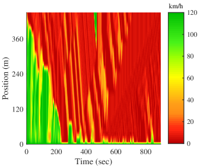
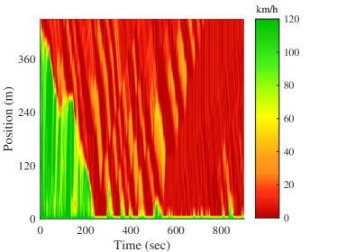
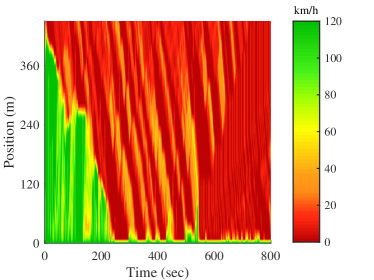
يوضح الشكل 7 أثر زيادة معدل اختراق مركبات الاستشعار في خرائط السرعة المعاد بناؤها، ونقارنها أيضا بسرعات الحقيقة المرجعية باستخدام جذر متوسط مربعات الأخطاء (RMSEs) والخطأ النسبي في حالة السرعة، :
| (23) |
حيث يرمز و إلى سرعة الحقيقة المرجعية وحالة المرور المقدرة في خلية الشبكة عند الزمن ، على التوالي. تُلتقط ديناميكيات التوقف والانطلاق جيدا عند مستويات الاختراق الثلاثة كلها، غير أن قيم RMSE و تشير إلى تحسن مع زيادة مستويات الاختراق.
IV-C توزيع مركبات الاستشعار
لا تعتمد دقة مسألة التقدير على معدلات اختراق مركبات الاستشعار فحسب، بل تعتمد أيضا على كيفية توزع هذه المركبات في العينة. وفي هذا القسم، نجري تجارب محاكاة لدراسة أثر تغيير التوزيع المكاني للمركبات في عينة من مركبات الاستشعار المستخدمة لإعادة البناء. وفي هذا المثال، نحاكي مقطع طريق شرياني طوله 500 م مع خطة توقيت إشارات ثابتة عند الطرف المصبي. وتُحاكى أربع دورات إشارة مدة كل منها 200 ثانية، مع إشارة خضراء مدتها 100 ثانية وإشارة حمراء مدتها 100 ثانية في كل دورة. ويوضح الشكل 8a خريطة السرعة الناتجة، كما يوضح الشكل 8b خريطة سرعة أُعيد بناؤها مع نسبة اختراق لمركبات الاستشعار قدرها 10% (للمرجعية).
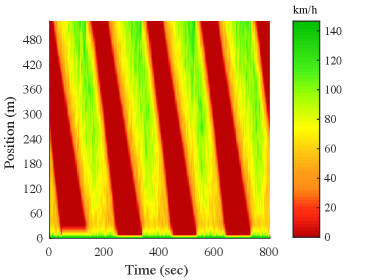
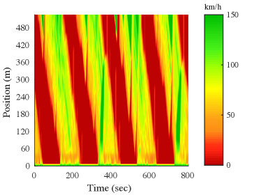
لدراسة أثر توزيع مركبات الاستشعار في العينة (مكانيا)، أُجريت 100 محاكاة لمعدلات اختراق قدرها 5% و10% و20% و30%، وأُعيد بناء خريطة السرعة باستخدام نهج MRF المقترح. ويعرض الشكل 9 تكرارات قيم MAPE لكل معدل من معدلات الاختراق.
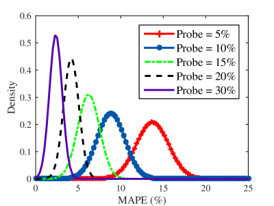
تبلغ القيمة المتوسطة لـ MAPE عند مستوى اختراق مركبات الاستشعار نحو ، غير أن التباين العالي المرصود يعني أن أخطاء زمن الرحلة يمكن أن تكون أعلى بكثير في ظل توزيعات متغيرة لمركبات الاستشعار. ومع زيادة عدد مركبات الاستشعار، ينخفض هذا التباين في الخطأ.
IV-D اختبار النموذج مقارنة بخوارزمية مرجعية
في هذا القسم، نقارن بعد ذلك تقنية إعادة البناء المقترحة بمرشح كالمان، وهو النهج الأكثر استخداما على نطاق واسع في TSE، انظر [seo2017traffic] لمسح حديث. ولهذا الغرض، نستخدم تطبيقا حديثا لمرشح كالمان في [bekiaris2016highway]. وتهدف معظم هذه النهوج إلى تقدير كثافات المرور، التي يمكن استخراجها من النهج المقترح عبر إشغالات الخلايا: ليكن دالا على كثافة المرور في الخلية عند الزمن ،
| (24) |
حيث إن هو حجم الخلية. ولمقارنة دقة التقدير، نستخدم نسبة الأداء النسبية (المقترحة في [bekiaris2016highway]):
| (25) |
حيث كما سبق، يمثل و كثافتي المرور للحقيقة المرجعية والتقدير عند الزمن في الخلية . ويُجرى الاختبار باستخدام ظروف مرور مختلفة للحقيقة المرجعية على طريق ذي إشارات ضوئية تحت أطوال متعددة لمقاطع الطريق ومعدلات تدفق داخلة متعددة. وفي كلتا الحالتين نستخدم معدل اختراق قدره 15%. وكما يلاحظ في الشكل 10، فإن نسب الأداء النسبية المحققة باستخدام نهج MRF أقل من تلك الخاصة بمرشح كالمان في جميع حالات الاختبار، مما يشير إلى دقات أعلى.
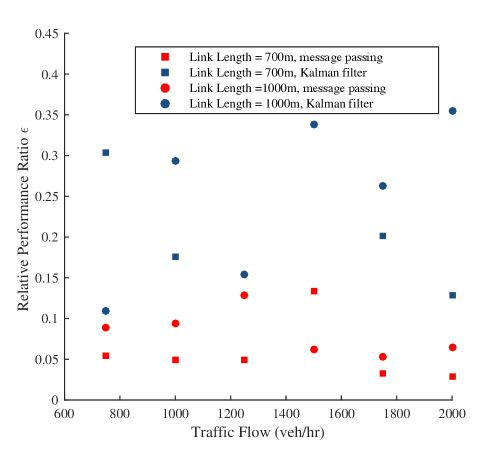
V الخلاصة
تُعرض منهجية لتقدير حالة المرور TSE تجمع بين نمذجة المرور متوسطة المقياس والقوة الإحصائية للنماذج البيانية الاحتمالية. ويُقترح نهج حقول ماركوف العشوائية (MRF) باستخدام تمثيل مخطط العوامل للديناميكيات لأغراض التعلم الإحصائي عندما تكون البيانات المتاحة محدودة. وتتمثل الأفكار الرئيسة، أولا، في أن تمثيل الحقل العشوائي، والأهم من ذلك العوامل، ينبثقان مباشرة من ديناميكيات المرور. وهذا يعني أن حالات المرور المقدرة تحترم جميع قوانين تدفق المرور التي تؤسسها ديناميكيات المرور. وثانيا، نمثل الديناميكيات بسلسلة من الحقول العشوائية، حقل واحد لكل خطوة زمنية، مما ينتج مخططات عوامل هي أشجار. ونتيجة لذلك يمكن الحصول على التوزيعات الهامشية بدقة عبر تقنيات تمرير الرسائل بتمريرة أمامية واحدة وتمريرة خلفية واحدة (في كل خطوة زمنية). وفي كل خطوة زمنية تُحل مسألة الاستدلال مرة واحدة فقط، وهو ما يعني أن النهج المقترح ملائم للتنفيذ الفوري.
تشير تجاربنا إلى أن النهج المقترح قادر على التفوق على التقنيات القياسية التي تستخدم مرشحات كالمان لتقدير حالة المرور TSE. ويتمثل التحدي الرئيس في النهج الحالي وفي جميع النهوج التي تهدف إلى تقدير ظروف المرور باستخدام نماذج وقياسات لاغرانجية في غياب المعرفة بعدد المركبات في النظام عند أي خطوة زمنية. ورغم أن عدة أوراق حديثة عالجت هذه المشكلة، مثل [zheng2017estimating]، فإن نهج TSE الذي يجمع بين تقدير الأحجام وسرعات المركبات يبدو أنه لا يزال مشكلة مفتوحة. وقد يكون ذلك مسارا جيدا للبحث المستقبلي. ومن الامتدادات الممكنة الأخرى للنهج الحالي امتداد يتضمن المرور متعدد الحارات.
الشكر والتقدير
مُوِّل هذا العمل جزئيا من C2SMART Center، وهو مركز نقل جامعي من الفئة 1 تابع لـ USDOT، وجزئيا من New York University Abu Dhabi Research Enhancement Fund.
References
| Saif Eddin Jabari هو أستاذ مساعد في الهندسة المدنية والحضرية في New York University Abu Dhabi، U.A.E. وأستاذ مساعد ضمن الشبكة العالمية في الهندسة المدنية والحضرية في Tandon School of Engineering، New York University، NY، U.S.A.. حصل على درجة B.Sc. في الهندسة المدنية من University of Jordan وعلى درجتي M.S. وPh.D. في الهندسة المدنية من University of Minnesota Twin Cities في عامي 2009 و2012، على التوالي. وقبل انضمامه إلى New York University، كان باحثا بعد الدكتوراه في قسم الرياضيات في IBM Watson Research Center في Yorktown Heights، New York. وتقع اهتماماته البحثية عند تقاطع نمذجة تدفق المرور النظرية والتعلم الإحصائي، مع تطبيقات في عمليات المرور، بما في ذلك تقدير حالة المرور، واكتشاف الحوادث وتحديد مواقعها، والتحكم المروري في الزمن الحقيقي. |
| Deepthi Mary Dilip هي أستاذة مساعدة في BITS Pilani, Dubai Campus. حصلت على درجتي M.Tech وPh.D. من National Institute of Technology, Calicut وIndian Institute of Science, Bangalore في عامي 2009 و2015، على التوالي. وشغلت منصب زميلة ما بعد الدكتوراه في New York University Abu Dhabi قبل انضمامها إلى BITS Pilani. وتشمل اهتماماتها البحثية النمذجة الاحتمالية لأنظمة النقل وتحليل الموثوقية. |
| DianChao Lin حصل على درجتي B.Sc. وM.Sc. في هندسة المرور وهندسة معلومات المرور والتحكم من Tongji University, Shanghai, China، في عامي 2013 و2016، على التوالي. وهو حاليا يتابع درجة Ph.D. في تخطيط النقل وهندسته في New York University، NY، U.S.A.. وتشمل اهتماماته البحثية تقدير حالة المرور، وتطبيقات نظرية الألعاب على المركبات الآلية، وتدفق المرور متعدد الأنماط في الشبكات الحضرية. |
| Bilal Thonnam Thodi حصل على درجة B.Tech. في الهندسة المدنية من Cochin University of Science and Technology في عام 2014 ودرجة M.Tech. في هندسة النقل من The Indian Institute of Technology Madras (IITM) في عام 2017. وهو حاليا يتابع درجة Ph.D. في تخطيط النقل وهندسته في New York University، NY، U.S.A.. وتشمل اهتماماته البحثية تطبيقات الذكاء الاصطناعي وتقنيات التعلم الآلي على مسائل عمليات المرور. |